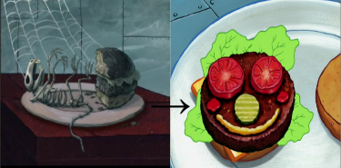
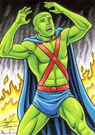

Teddy grew up in New York City with a loving family and a love for nature as he would hike and adventure
the outdoors. He attended Harvard and Columbia Law School. As a politician, Teddy was a progressive
fighting against the evil of monopolies, and
the majority of the republican party, as the majority of the republican party was for
corporations. To destroy his career
William Mckinley chose him to become his vice president. Ironically Mckinley was shot and Teddy became
the president and began his highly progressive reforms.
Teddy established the New Lands act, made unused government land national parks, and the National
Reclamation act, established fees for corporations to use national parks. In turn, gave us national
parks protected by federal law that we and the animals occupying it can enjoy.

Teddy also established the Meat Inspection Act, inspections anytime, and the Pure Food & Drug
Act, by law drugs and foods, needs the ingredients listed, which changed how meat corporations
function
letting us now eat pure meat, and if we have questions, check the label.

When Teddy hears "Forest fire"
Teddy is a notorious environmentalist but something that can destroy his
federal parks and forests is fire.
Teddy doesn't just give coal miners a 40% raise and fewer hours but also gives the company the
ability to raise their product by 10% supporting that Teddy deals with both sides.
Teddy wants to control the Republican party instead of
destroying them because he needs them to keep the peace, the Republican party supports
corperations that supplies people with jobs therefor needs to rely on them.
Martian Manhunter's weakness is fire.
Martian Manhunter has a
shapeshifter ability, he can change into anyone and that grants him the mindset of viewing
both
sides.
Martian Manhunter
even has mind control to control his foes.
.png)
.png)
.png)
.png)